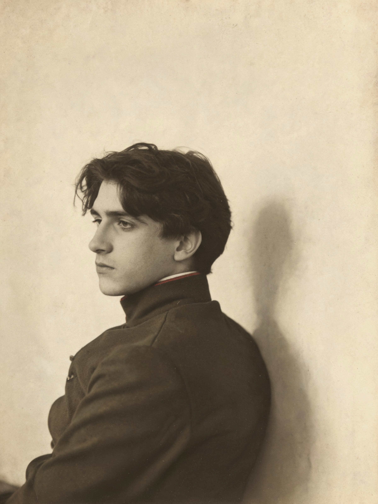
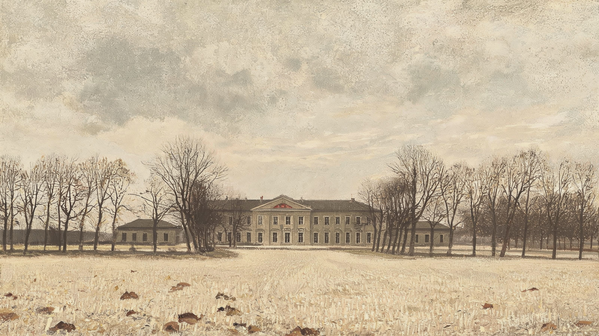
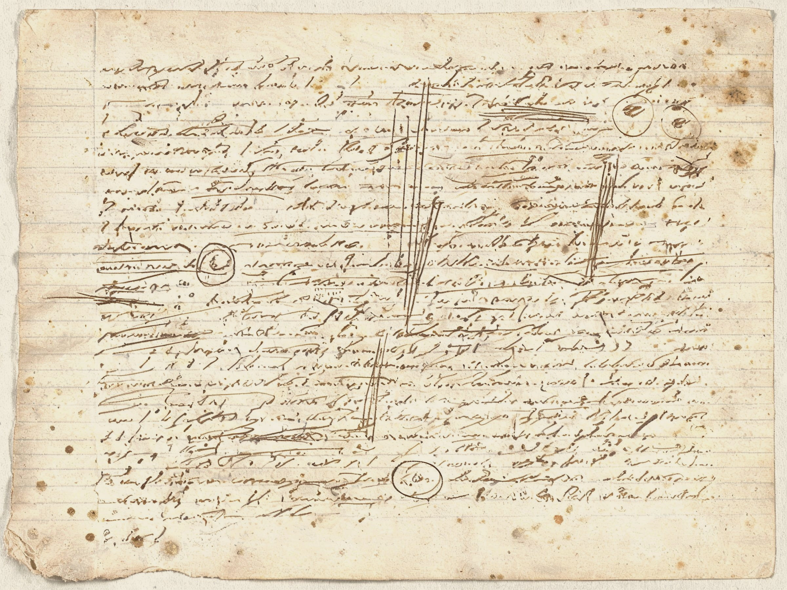
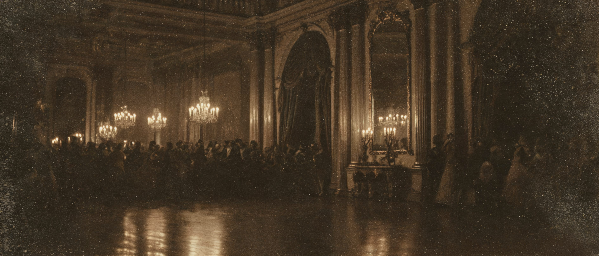
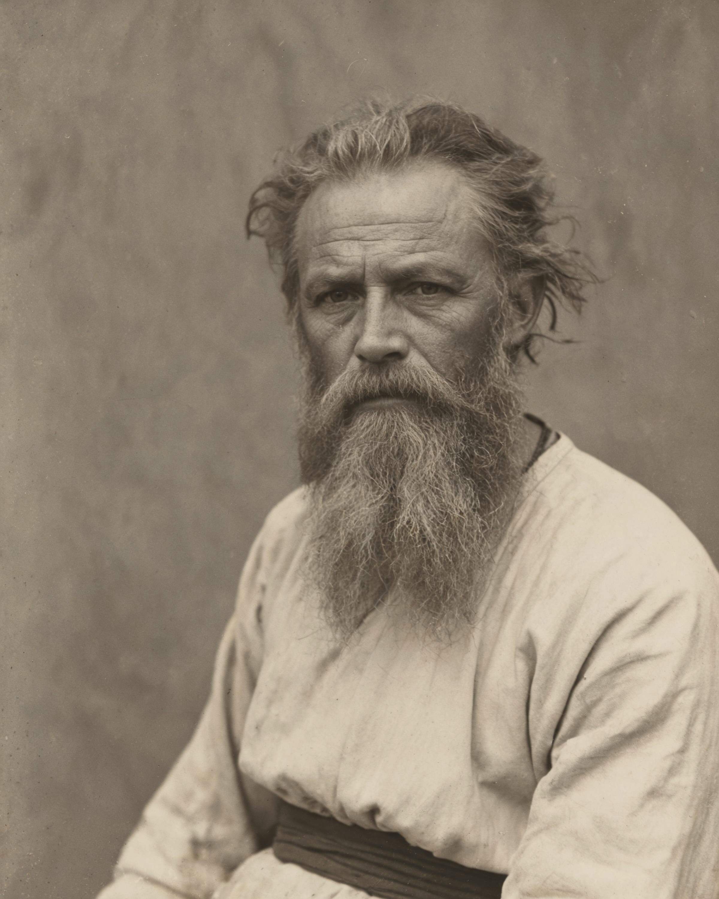
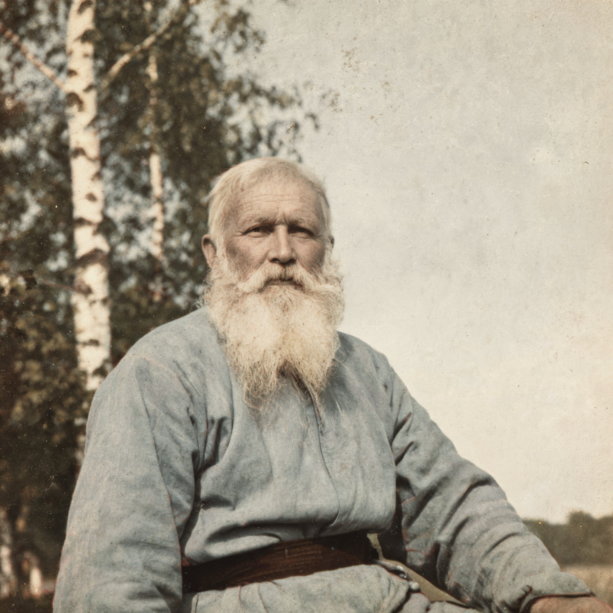
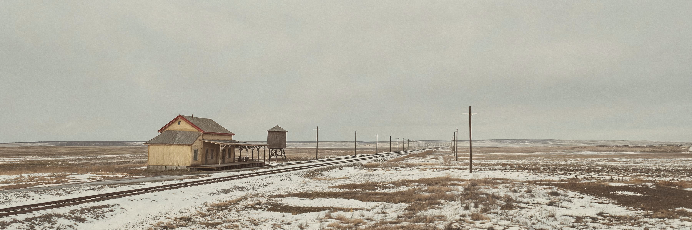
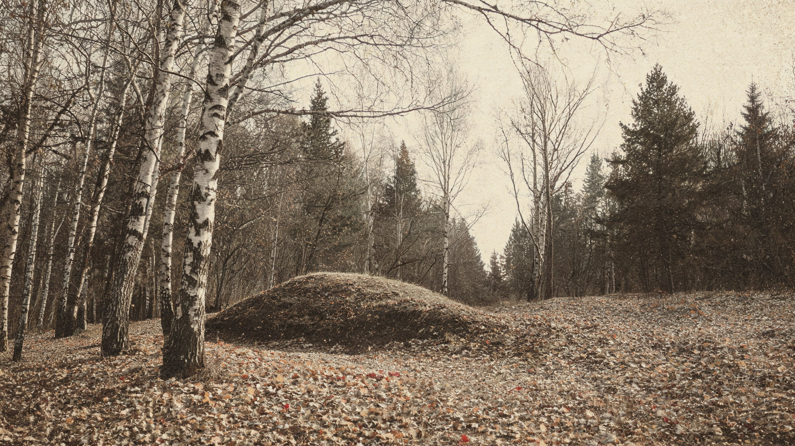
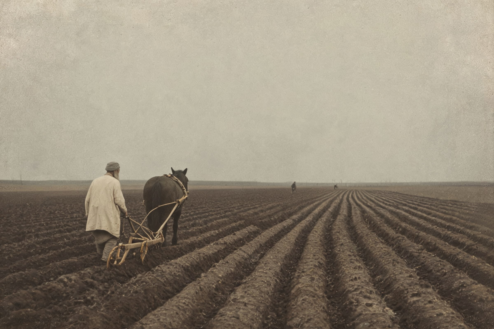

我从来没有过日记，因为我看不出它有什么用处。现在，既然我在从事自身能力的发展，那么借助日记我就能判断这种发展的进程。日记里应当有一张规则表，日记里也应当规定我今后的行动。
《日记》1847年4月7日（俄历）已核实序章ПРОЛОГ · ЗЕЛЁНАЯ ПАЛОЧКА
绿 杖
一根埋在林间沟里的绿杖，上面写着让所有人幸福的秘密。
他五岁听说它，八十二岁葬在它上面。
向下滚动 —— 开始挖掘

一八三三年。亚斯纳亚波利亚纳。
哥哥尼古拉说：扎卡兹林边的沟里，埋着一根绿杖。
绿杖上写着那个秘密 —— 只要它被发现，所有人都会幸福。
«…написанное на ней должно уничтожить всё зло в людях и дать им великое благо»
一个五岁的孩子信了。此后八十二年，他没有停止寻找。
为了寻找那根绿杖，他花掉了余下的八十二年。
绿杖传说见托尔斯泰《回忆录》（1903–1906）；葬于其埋藏处之愿见1895年3月27日日记已核实「蚂蚁兄弟」
他们甚至玩过一个游戏，叫「蚂蚁兄弟」：几个人钻到椅子底下，用箱子把四周堵住，拿头巾盖起来，然后坐在那片黑暗里，紧紧挤在一起。
«…все сделаются муравейными братьями. (Вероятно, это были Моравские братья, о которых он слышал или читал, но на нашем языке это были муравейные братья). И я помню, что слово «муравейные» особенно нравилось, напоминая муравьёв в кочке.»
……所有人都会变成「蚂蚁兄弟」。（这大概是摩拉维亚兄弟会，他听人说过或读到过，但在我们的话里，他们是蚂蚁兄弟。）我记得「蚂蚁」这个词特别讨人喜欢，因为它让人想起土堆里的蚂蚁。
托尔斯泰《回忆录》 · 1903–1906已核实
而那个秘密，尼古拉说，写在一根绿杖上。
«…эта тайна была, как он нам говорил, написана им на зелёной палочке, и палочка эта зарыта у дороги, на краю оврага старого Заказа, в том месте, в котором я… просил в память Николеньки закопать меня.»
……这个秘密，他告诉我们，是他写在一根绿杖上的；而那根小杖就埋在老扎卡兹沟边的大路旁 —— 就是那个地方，我……请求过，为了纪念尼古连卡，把我埋在那里。
托尔斯泰《回忆录》 · 1903–1906已核实
第一乐章КТО Я · 1854
他卖掉了他出生的那座房子。
房子被拆开，
运到三十五俄里以外
一八五四年秋。亚斯纳亚波利亚纳的大宅，以五千纸卢布卖给了地主戈罗霍夫 —— 按「拆走」的方式：木料编号、卸下、装车，运往三十五俄里外的多尔多耶村。那是他出生的房子。
卖房的钱，他先存进了社会救济署。大约半年之后，它用来还了他的一笔赌债。
此后五十六年，这一家人住在两侧的厢房里。
中文常说「他在牌桌上输掉了自己出生的房子」—— 亚斯纳亚波利亚纳博物馆把这句话称为「极其顽固的流行误解，因为它只对了一半」。
因果链说法不一
把光标移到虚线轮廓上

一场持续六十三年的实验
同一年，他开始写日记。第一则里，他给自己列了规则：每天早起、不多说话、不喝酒、把每天的事做完。
这不是一次青春的自我约束，而是一台此后运转到死的机器 —— 直到一九一〇年他临终前，最后一则日记停下。
ДНЕВНИК · 选择年份
这一年他随长兄尼古拉去了高加索，以士官生身份入伍，驻扎在捷列克河边的哥萨克村落。写作正是在这里开始的。
史实：1851年4月离乡，6月抵高加索已核实您走近码头 —— 煤、牲口粪、潮湿和牛肉的特别气味扑向您……
《十二月里的塞瓦斯托波尔》开篇 · 1855年《现代人》第6期已核实1859 年秋，他在庄园里开办农民子弟学校：免费、没有体罚、没有固定课程表、学生可以自由来去，他亲自授课。1862 年 7 月警察搜查之后，学校停办。
史实：1859年秋办校，1862年7月停办已核实我说了。她说「是」。她像一只被打中的鸟。没什么可写的。这一切不会被忘记，也写不出来。
《日记》1862年9月16日（俄历）已核实婚礼当天是恐惧、不信任和想逃走的愿望。……她全都知道，而且坦然。
《日记》1862年9月20—24日已核实这段时间我只在忙那些被称为「实际事务」的事。但这种闲散让我难受。我无法尊重自己。杂志决定停办，学校大概也一样。
《日记》1862年10月15日，Т.21已核实我的生命停摆了。我还能呼吸、吃、喝、睡，也不能不呼吸、不吃、不喝、不睡；但生命不在，因为已经没有任何一种欲望，其满足我会认为是合理的。
《忏悔录》第四章 · 写于1879–1882已核实我翻译了老子。没有达到我想要的效果。
《日记》1884年3月6日，ПСС т.25已核实把我葬在最便宜的棺材里，像埋葬穷人那样。不要放花、不要花圈、不要致辞。
《日记》1895年3月27日已核实骄傲，想成为老子。
《日记》1909年，ПСС т.57已核实这就是我的计划。做你该做的，其余随它去……
《日记》1910年11月3日（俄历），阿斯塔波沃 —— 去世前四天已核实ПРАВИЛА · 点一下方框。你会得到他的回应。
他感兴趣的不是心理过程的结果，
而是过程本身 —— 它的形式、
它的规律。
这个词后来成了理解他全部作品的钥匙。
它是什么、从哪来、在他身上怎么运转 —— 另有一页专门讲。
第二乐章 · 深潜 ①ВОЙНА И МИР · 1863–1869
一八〇五年，一个受伤的人
躺在战场上，
第一次看见了天空

«Над ним не было ничего уже, кроме неба, — высокого неба, не ясного, но всё-таки неизмеримо высокого, с тихо ползущими по нем серыми облаками.»
他上方已经什么也没有了，除了天空 —— 高高的、并不明朗、却依然高得无法测量的天空，灰色的云在它上面静静地爬着。
«Как же я не видал прежде этого высокого неба? И как я счастлив, что узнал его наконец.»
我以前怎么没有看见过这高高的天空？我多么幸福，终于认识了它。
«Да! всё пустое, всё обман, кроме этого бесконечного неба.»
是的！一切都是空的，一切都是欺骗，
除了这无限展开的天空。
托尔斯泰没有描写胜利，也没有描写失败。他让一个受伤的人躺下来，然后把整个战场从画面里撤走 —— 剩下的只有天空。
这是他的方法：把人从历史里拿出来一分钟，看他还是什么。
另一扇窗：他用耳朵爱上了一个人
奥特拉德诺耶的夜里，安德烈躺在楼下的窗边，看不见人，只听见楼上的声音。
«Так бы вот села на корточки, вот так, подхватила бы себя под коленки — туже, как можно туже, натужиться надо, — и полетела бы. Вот так!»
真想就这样蹲下来，像这样，把自己抱住膝盖 —— 抱得紧紧的，得使劲绷紧 —— 然后就飞起来。就这样！
娜塔莎，《战争与和平》第二卷第三部第二章已核实
互动МАЯТНИК ПЬЕРА
拖动摆锤。他在两极之间过了二十年。
松手。它会停在你给出的速度决定的位置 —— 不预设答案。
「我常说：不是凭我们的理智，而是凭上帝的裁判。」
«Я говорю: не нашим умом, а Божьим судом.»
普拉东·卡拉塔耶夫，《战争与和平》第四卷第一部第十二章已核实
「她跟我有什么关系！」
«И дела нет до моего существования!»
安德烈公爵在奥特拉德诺耶月夜，卷二第三部第二章已核实
互动ДИФФЕРЕНЦИАЛ ИСТОРИИ
没有哪一支箭头知道洪流的方向
每一支只看着离自己最近的几支。它们各自修正一点点，然后就成了历史。
「只有把这种自由限制到无限，即把它视为无限小的量，我们才会确信原因完全不可企及，而那时历史学将不再寻找原因，而以寻找规律为己任。……到达无限小之后，数学这门最精确的科学放弃了分割过程，转而开始新的过程：对未知的、无限小的量求和。」
《战争与和平》尾声第二部第十一章已核实
第三乐章 · 深潜 ②АННА КАРЕНИНА · 1873–1877
他想惩罚她。
写到一半，他爱上了她。
这句常被引用的自述，各种转述版本不一。 出处存疑
小说的第一句话就把全部幸福与全部不幸放在了同一行里。
«Все счастливые семьи похожи друг на друга, каждая несчастливая семья несчастлива по-своему.»
幸福的家庭都是相似的，不幸的家庭各有各的不幸。
《安娜·卡列尼娜》第一部第一章开篇已核实
申冤在我，我必报应
题词 · 出自《罗马书》12:19已核实他用这句话起誓。然后他用七百页的篇幅，把一个「有罪」的女人写成了整部书里唯一不肯说谎的人。
关于这部书的写法，他没有留下那句话。
「我本想惩罚她，结果却爱上了她」一类说法在中文与英文读物中广泛流传查无一手出处
平行结构本身就是论证：安娜的时间越走越快、越来越暗；列文的时间越走越慢、越来越亮。两条线从来不相等。
互动БАЛ · СЛЕЖЕНИЕ
你永远比安娜慢半步
左右移动鼠标、横向滚动或横向拖动。镜头有惯性 —— 它追不上她。等它终于停下来，引文才出现。

«Анна была не в лиловом, как того непременно хотела Кити, но в черном, низко срезанном бархатном платье… это была только рамка, и была видна только она, простая, естественная, изящная и вместе веселая и оживленная.»
安娜穿的不是吉提一心以为的淡紫色，而是黑色的、领口开得很低的天鹅绒长裙……那只是画框，看得见的只有她本人：朴素、自然、优雅，同时又快乐而生气勃勃。
《安娜·卡列尼娜》第一部第二十二章已核实
互动МЕЛ
有些话不能说出口，只能用首字母
按住鼠标擦开桌上的粉笔灰。字母会一个一个显出来。擦满全部，整句话才出现。
《安娜·卡列尼娜》第四部第十三章 · 列文与吉提用粉笔写的首字母已核实
互动КОСЬБА
他终于不思考了
割草是列文唯一真正获得平静的时刻 —— 因为思想停下来了。这段动画的机械重复就是它的意思。
«Нужно физическое движенье, а то мой характер решительно портится.»
需要身体的运动，不然我的性格简直要坏掉了。
《安娜·卡列尼娜》第三部第四章已核实
安娜最后一次出门前，换上了她唯一一件还算体面的黑裙。
她要去火车站。她心里那句话，她已经不再说出口了。
«И свеча, при которой она читала исполненную тревог, обманов, горя и зла книгу, вспыхнула более ярким, чем когда-нибудь, светом, осветила ей всё то, что прежде было во мраке, затрещала, стала меркнуть и навсегда потухла.»
那支蜡烛，她借着它的光读完了那本充满忧虑、欺诈、悲伤和罪恶的书 —— 它比以前任何时候都更明亮地闪了一下，照亮了她先前处于黑暗中的一切，噼啪作响，开始昏暗，永远熄灭了。
《安娜·卡列尼娜》第七部第三十一章已核实互动ФРУ-ФРУ
同一条脊椎
拖动滑杆。两条剪影共用的那条弧线会被标出来 —— 这个对位关系原文里已经有了，这里只是把它显影。
间章 · 深渊ИСПОВЕДЬ · 1879–1882
五十岁那年，
他把绳子从房间里拿了出去
他把绳子拿了出去，也不敢再把枪带进树林 —— 怕自己会用它。他在《忏悔录》里写下了那个东方的寓言：一个人为了逃避野兽掉进枯井，抓住一丛野灌木，抬头看见野兽，低头看见龙，而两只老鼠正在啃咬那根枝条。
他伸出了舌头，去舔叶子上那几滴蜜。
一个旅人在草原上被一头狂怒的野兽追赶。为躲避野兽，他跳进一口无水的井，却在井底看见一条张着大嘴的龙。他既不敢爬出去，也不敢跳下去，只好抓住长在井壁裂缝里的一丛野灌木的枝条，悬在那里。
趁还悬着的时候，他四下张望，看见两只老鼠，一黑一白，正绕着那根枝条均匀地走动，啃噬着它。眼看枝条就要折断。
但他向四周寻找，在叶子上找到几滴蜜，用舌头够到，舔了起来。
托尔斯泰紧接着写：这蜜已经不再使他快乐。
而这不是寓言，这是真实的、无可争辩的、人人都明白的真理。
《忏悔录》第四章已核实如果我是这样一个人：住在森林里，并且知道没有出口 —— 我本可以活下去；
但我是一个在森林里迷了路的人。
第四乐章 · 深潜 ③СМЕРТЬ ИВАНА ИЛЬИЧА · 1886
一八八六年，
他写了一个人的死，
从葬礼开始，倒着写

小说的第一章就是他的葬礼。同事们站在棺木旁边，各自想着「还好死的是他，不是我」。然后时间倒回去，从他的一生开始写。
倒推结构不是技巧：它让读者和伊凡一样，先知道结局，再回去看那些被浪费掉的日子。
他在基泽韦捷尔逻辑学课本上学过的那道三段论，在他一生中，他都觉得只对「凯」成立 —— 对他自己绝不成立。
«Кай — человек, люди смертны, потому Кай смертен, казалось ему, во всю его жизнь правильным только по отношению к Каю, но никак не к нему.»
凯是人，人是要死的，所以凯是要死的 —— 这在他看来说的只是凯，绝不是他自己。
难道凯也曾有过万尼亚那么喜欢的那个分条皮球的气味吗！难道凯也曾那样吻母亲的手，难道凯也曾听过母亲裙裾绸缎那样沙沙作响？
凯确实是要死的，他死去是正确的；但我，万尼亚，伊凡·伊里奇，带着我所有的感情、思想 —— 我这是另一回事。
他觉得有人带着疼痛把他往一个又窄又深的黑袋子里塞，一直往里塞，却塞不进去。而这件对他来说极其可怕的事，是在痛苦中完成的。他既害怕，又想掉进去，又挣扎，又帮忙。
整整三天，对他来说已没有时间；他在那个黑袋子里扑腾，一只看不见的、不可抗拒的力量把他往里塞。
他感到，他的痛苦既在于他正被塞进这个黑窟窿，更在于他钻不进去。而阻碍他钻进去的，是他承认自己的一生过得很好。
这个为自己一生的辩护，钩住了他，不放他往前走，也最折磨他。
突然，一股力量撞在他胸口、撞在他肋侧，更紧地压住他的呼吸，他掉进了那个窟窿，而在窟窿的尽头，有什么东西亮了起来。
«Страха никакого не было, потому что и смерти не было. Вместо смерти был свет.»
没有任何恐惧，因为连死亡也没有了。
取代死亡的，是光。
互动ПАНИХИДА
散落的句子。把它们放回原位。
这五句是小说第一章里同事们在葬礼上的举动与想法 —— 打散排列。点击任意一句，它会回到原文顺序里的位置。托尔斯泰最冷酷的一笔是：没有人真正在乎，每个人都只顾自己的秩序。
「死结束了，」有人说。
「再也没有死了。」
第五乐章 · 深潜 ④ВОСКРЕСЕНИЕ · 1889–1899
尽管人们把石板铺好，
春天还是春天
人们聚集在一个不大的地方，几十万人，竭力把他们在上面挤着的那片土地糟蹋掉：用石头把地压住，不让地上长出任何东西；把每一棵刚冒出来的小草都刮掉；用煤和石油熏烟；砍掉树木，赶走一切走兽飞鸟 ——
然而春天终究是春天，即便在城市里。
太阳晒着，青草复苏，凡是没有被铲掉的地方都长出来、绿起来，不只是林荫道的草坪上，连石板缝里也是。
《复活》第一部第一章已核实
互动МАШИНА ПРАВОСУДИЯ
机器运转得很顺。没有人在审判。
齿轮转得越顺，荒诞越明显 —— 装置不能卡顿，因为它的可怕之处正是它的高效。
已判决 0 件 · 每件用时 0.0 秒
互动ЖИВОТНЫЙ / ДУХОВНЫЙ ЧЕЛОВЕК
他身上有两个人在打架
你可以抓住游标拖到任意位置。松手 —— 它会按你正在读的那一段重新归位。
«В Нехлюдове, как и во всех людях, было два человека. Один — духовный, ищущий блага себе только такого, которое было бы благо и других людей, и другой — животный человек, ищущий блага только себе и для этого блага готовый пожертвовать благом всего мира.»
在聂赫留朵夫身上，也像在所有人身上一样，有两个人。一个是精神的人，他只寻求那种同时也是他人之福的自身之福；另一个是兽性的人，他只寻求自己的福，为了这份福，他准备牺牲全世界的福。
《复活》第一部第十四章已核实
互动ПАСХАЛЬНЫЙ ПОЦЕЛУЙ
把两点连起来。然后看着它变冷。
那个复活节的吻是真的，而后的坠落也是真的。这个交互不做解释，只让你亲手画出那条轨迹。
「您这是在做什么呀？」她喊了一声，那声音就像他无可挽回地打碎了某件无限珍贵的东西，然后她快步跑开了。（《复活》第一部第十五章）
第六乐章УХОД · 1910
一九一〇年十月二十八日凌晨，
他叫醒医生，
说：我要走
八十二岁。夜里他听见有人在翻他的文件。他穿好衣服，提着箱子，从后门走进树林。他说他要去一个没人认识他的地方，安静地死掉。
他走了五天。

互动АСТАПОВО · СТАНЦИЯ
全世界都赶到了这个小站
电报线从各个方向汇聚到同一根电线杆上。记者人数、电报数量、封锁令以档案体在下方堆积 —— 而窗户里那句话很小，而且是一句断句。

档案ПРЕССА · НОЯБРЬ 1910
这大概是最早的全球媒体事件之一
点一下看简注。头版标题为示意性拟写，报头沿用当时真实的报纸名。
我的离去会让你难过。我为此感到抱歉，
但请你理解并相信：我别无选择。
在俄国，我没有见过比托尔斯泰的墓更宏伟、更动人心魄的东西。
«…nulla crux, nulla corona – kein Kreuz, kein Grabstein, keine Inschrift, nicht einmal der Name Tolstoi.»
……无十字，无花冠 —— 没有十字架，没有墓碑，没有铭文，连托尔斯泰的名字也没有。
在这世上，没有什么比最终极的朴素更不朽。
……不如这座在林中某处、只被风低声吹拂、自身既无讯息也无言语的、壮丽地沉默着、动人地无名的坟。
茨威格《世间最美的坟墓》（Das schönste Grab der Welt，《俄罗斯之行》第十七章，1928）已核实没有墓碑。没有十字架。没有名字。
只有一道长方形的土丘，和几株树。

扎卡兹林边的沟里，埋着一根绿杖。
上面写着让所有人幸福的秘密。
他找了一辈子。没有找到。他把自己葬在了那里。
那根绿杖还在那里。
他晚年这样写：
«Идеал „муравейных братьев", льнущих любовно друг к другу, только не под двумя креслами, завешанными платками, а под всем небесным сводом всех людей мира, остался для меня тот же. И как я тогда верил, что есть та зелёная палочка, на которой написано то, что должно уничтожить всё зло в людях и дать им великое благо, так я верю и теперь, что есть эта истина и что будет она открыта людям и даст им то, что она обещает.»
「蚂蚁兄弟」的理想 —— 彼此亲爱地挤在一起，只不过不是在两把椅子底下、盖着头巾，而是在整个天穹之下、在全世界所有人之间 —— 对我来说始终没有变。就像我当年相信有那根绿杖，上面写着那行必将消灭人间一切恶、赐给他们伟大幸福的话，我如今仍然相信：这个真理是存在的，它终将被揭示给人们，并给他们它所许诺的东西。
托尔斯泰《回忆录》 · 1903–1906 —— 他五岁时的游戏，与他八十岁的信念已核实
回廊ГАЛЕРЕЯ · 自由探索
走完这条路之后，
还有一些房间
这里不按顺序。挑一个进去就行。

星丛ХАДЖИ-МУРАТ · 1896–1904
牛蒡花
《哈吉·穆拉特》卷首的那丛「鞑靼花」：一根枝条被扯断，像一只被砍掉的手；另外两朵花本来是红的，现在发黑了；整丛被车轮碾过，之后又立了起来，因此歪着身子 —— 可它毕竟还是立着。把鼠标按在它身上，反复压弯：它每次都会弹回来，但不会回到原位。
«Экая энергия! …Все победил человек, миллионы трав уничтожил, а этот все не сдается.»
多大的劲啊！……人什么都战胜了，消灭了千百万棵草，可这一棵还是不肯屈服。
《哈吉·穆拉特》卷首 · 1896–1904，1912年遗作出版已核实
星丛МНОГО ЛИ ЧЕЛОВЕКУ ЗЕМЛИ НУЖНО · 1886
一个人需要多少土地
帕霍姆和太阳赛跑：跑过的地都归他。向右滚动或拖动。太阳同时在落 —— 跑得越多越好。你确定？
三俄尺。
雇工拿起铁锹，给帕霍姆挖了一个墓坑 —— 从他脚到头顶那么长：三俄尺（约 2.13 米），然后把他埋了。英译把这里归化成「六英尺」；俄文原文是 три аршина。本站用原文的尺寸。
星丛ПОСЛЕ БАЛА · 1903
舞会以后
改变伊凡的不是他知道了什么坏事，而是他看见了同一个人做两件事。拖动滑杆 —— 同一只手，同一张脸，同一个下颌。
回声ГОЛОСА
他不是只被赞美
屠格涅夫、契诃夫、福楼拜、纳博科夫、伯林、梅列日科夫斯基、高尔基、罗曼·罗兰、茨威格、列宁 —— 他们互相矛盾。尤其要保留列宁那种两面评价，因为它正是全站要呈现的张力。
遗产НАСЛЕДИЕ
不抗恶，从亚斯纳亚到蒙哥马利
线条的形态会一路变下去 —— 每转一次手，思想都会变形，而它仍在传递。
彩蛋ТЫ ЕГО УЖЕ ЗНАЕШЬ
你早就认识他
小学课本里的那几篇。点开翻牌。归属存疑的，本站直接标出来 —— 诚实比惊喜更重要。
档案ЦИФРЫ
数字
每一个数字旁都标着它的出处或不确定性。中文网络流传的数字大量有误。
档案ХРОНОЛОГИЯ · 1828–1910